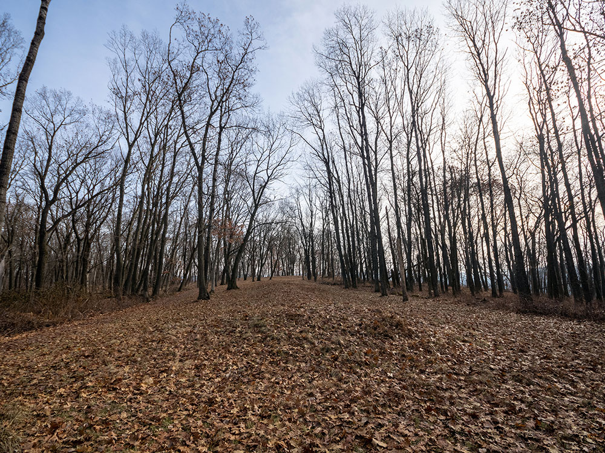
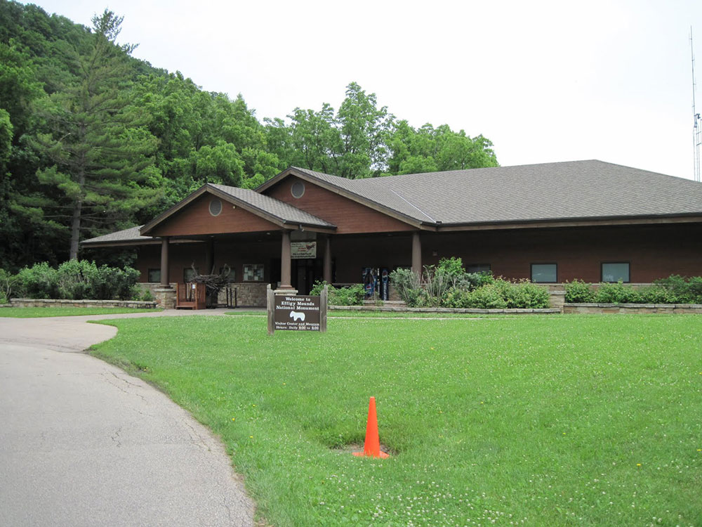

Historic German communal villages offering artisan shops, traditional food, museums, and cultural festivals in a scenic countryside setting.
General Information
Hours vary by season and business
How to Get There
From Cedar Rapids, IA (25 mi): Take US-151 S to IA-220 W and follow signs to the Amana Colonies.
Overview
The Amana Colonies are a group of seven historic villages in east-central Iowa, about 20 miles from Iowa City and Cedar Rapids, that were founded in the 1850s by German religious settlers who lived communally for 80 years. The villages are Amana, East Amana, High Amana, Middle Amana, South Amana, West Amana, and Homestead, and together they form a National Historic Landmark and one of the longest-lasting communal societies in American history. They are known for their traditional German-style restaurants, their craftsmanship in furniture, woolens, and baked goods, and the wineries that produce fruit and rhubarb wines.
Visitors come to the Amana Colonies for family-style meals in historic restaurants, for shopping in the villages' stores for woolens, furniture, quilts, and food, and for the Amana Heritage Museum and other museums. They also come for the festivals, which include Maifest in May, the Amana Oktoberfest, and Prelude to Christmas, and for the bicycling and hiking on the Kolonieweg trail and the Iowa River corridor. The villages are a popular weekend trip from Iowa City, Cedar Rapids, and the Quad Cities.
History
The Amana Society was formed by members of the Community of True Inspiration, a Pietist group that began in Germany in 1714 and moved to New York in 1842 and then to Iowa in 1855 seeking land to live communally and practice their faith. They named their first village Amana, from the Biblical Song of Solomon, meaning "to remain faithful," and built six more villages over the next decade. Members lived in a communal economy in which they shared work, property, and meals in kitchen houses, and they farmed and produced woolens, furniture, and wine. In 1932, a vote known as the "Great Change" ended the communal system and reorganized the colonies as a joint-stock corporation, and Amana Refrigeration, founded in 1934, grew into a well-known appliance brand.
Sightseeing and Popular Landmarks
The main village of Amana has the most shops and restaurants, including the Amana Woolen Mill, the Ronneburg Restaurant, and wineries, and the Amana Heritage Museum shows how communal life worked. Each village has historic buildings of brick, sandstone, and clapboard built in the German style, with large gardens and fruit trees, and the Communal Kitchen and Cooper Shop Museum in Middle Amana is an example of communal life. The Amana Colonies Visitor Center has information and maps.
Culture and Museums
The Amana Heritage Museum includes a church, a communal kitchen, and a general store, and tells the story of the Inspirationists through exhibits and artifacts. The Amana Arts Guild shows works by local artists, and German traditions are celebrated in events such as Maifest and Oktoberfest.
Parks
The Amana Colonies have a number of nature areas and trails. The Kolonieweg Trail is a paved trail that connects the villages, and the Lily Lake and the Amana Nature Trail offer walking and wildlife viewing. The Iowa River corridor has opportunities for canoeing and fishing, and the Amana Colonies Golf Course is a public course. The surrounding countryside of rolling hills and farms is good for bicycling.
Seasons and Weather
The Amana Colonies have a humid continental climate. Summers are warm and humid, with highs in the 80s°F, and winters are cold, with highs in the 20s and 30s°F and about 30 inches of snow. Spring and fall are the best times to visit, and the colonies are especially busy during October for the fall color and Oktoberfest and in December for Christmas events.
Things to Do
Discover Iowa's Historic Communal Villages
The Amana Colonies are a group of seven historic villages located in eastern Iowa that were founded by German Pietists known as the Community of True Inspiration. Established in the 1850s, the colonies operated as a communal society for more than 80 years and today remain one of the best-preserved examples of communal living in the United States. Visitors can explore historic buildings, artisan shops, museums, wineries, restaurants, and cultural attractions while experiencing a unique piece of American history.
Explore the Seven Villages
The Amana Colonies consist of Amana, East Amana, High Amana, Middle Amana, South Amana, West Amana, and Homestead. Each village offers its own historic character, featuring preserved homes, churches, workshops, and businesses that reflect the community's German heritage and communal traditions.
Visit Museums and Historic Sites
Visitors can explore the Amana Heritage Museum, historic communal kitchens, meeting houses, and workshops that tell the story of the colonies' religious beliefs, daily life, craftsmanship, and agricultural traditions. Exhibits highlight the community's transition from communal living to a modern economy in 1932.
Experience Local Food, Crafts, and Culture
The colonies are famous for traditional German food, handmade furniture, quilts, woolen goods, pottery, and artisan crafts. Visitors can enjoy family-style dining, bakeries, breweries, wineries, and specialty shops while experiencing traditions that have been preserved for generations.
Enjoy Festivals and Seasonal Events
Throughout the year, the Amana Colonies host festivals celebrating German heritage, including Maifest, Oktoberfest, holiday events, craft fairs, and cultural demonstrations. These gatherings provide opportunities to experience music, food, history, and community traditions.
Top Trails
Kolonieweg Trail
Length: Approximately 6 miles one way
Elevation Gain: Minimal
Difficulty: Easy
This popular rail-trail connects several of the Amana Colonies villages through forests, wetlands, and rural landscapes. It is ideal for walking, running, and cycling while exploring the region's natural beauty and historic communities.
Lily Lake Trail
Length: Approximately 1.5 miles loop
Elevation Gain: Minimal
Difficulty: Easy
Located near Main Amana, this peaceful trail circles Lily Lake and offers opportunities for birdwatching, photography, and enjoying a quiet outdoor experience within a scenic natural setting.
Amana Nature Trail
Length: Approximately 3 miles
Elevation Gain: Minimal
Difficulty: Easy
This trail provides access to woodlands, prairies, and wildlife habitats surrounding the villages while offering visitors a chance to experience the landscapes that supported the colonies' agricultural heritage.
Historic Village Walking Tours
Length: Variable distances available
Elevation Gain: Minimal
Difficulty: Easy
Self-guided walking tours throughout the villages allow visitors to explore historic homes, churches, communal buildings, artisan shops, and cultural landmarks while learning about the unique history of the Amana Colonies.
Sources: Amana Colonies Convention & Visitors Bureau information regarding history, museums, festivals, shopping, dining, and village attractions. https://amanacolonies.com
Additional information verified through Amana Heritage Society resources covering the communal era, historic sites, Kolonieweg Trail, walking tours, cultural traditions, and recreational opportunities throughout the Amana Colonies.
This article uses material from Wikipedia as well as information from official tourism and institutional sources. Key references include Amana Colonies Convention & Visitors Bureau, Amana Heritage Society, Iowa Tourism, National Park Service National Historic Landmarks, and National Weather Service Quad Cities. Wikipedia material is from the article "Amana Colonies", and is available under the Creative Commons Attribution-Share-Alike License 3.0.


